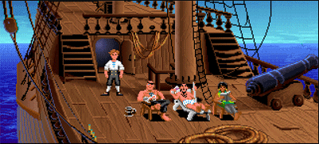

La saga de 'Monkey Island' tendrá una nueva entrega en 2022

'Return to Monkey Island' se estrenará este 2022.Sigue leyendo...
Sea of Thieves: Dónde encontraron los diarios del capitán del Headless Monkey

Últimos relatos un easter egg de Monkey Island.Sigue leyendo...
Todos los diarios la tripulación del Headless Monkey

Restos del mástil principal del Mono del Mar.Sigue leyendo...
Podría interesarte...
Incidentes por la conquista de la gobernadora
Peleas entre piratas y aspirantes que...
Tienda Stan´s renueva sus instalaciones
Los mejores precios en barcos que...
Se amotinó la tripulación del Mono del Mar
Otras noticias...
Inspección sorpresa en la prisión
El comisario de Monkey Island organizó...
Intento de asesinato en Monkey Island
El intento de asesinato de Guybrush Threepwood conmocionó...